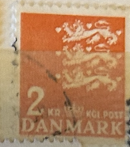
| SOURCE | TITLE| IMAGE MATCH | click to source page |
| nordfrim.com | Buy Denmark - AFA 404 - Mint | 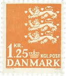 |
| eBay | OOS] Denmark #Mi0526 MH 1972 Heraldic Lion Small Arms Definitives [499] | eBay | 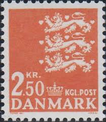 |
| eBay | Denmark #Mi0461 MNH 1967 Heraldic Lion Small Arms Definitives [442] | eBay | 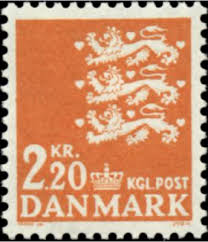 |
| HipStamp | Denmark Scott 499 | Europe - Denmark, General Issue Stamp / HipStamp | 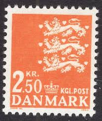 |
| Stampedia | DENMARK 1947 2 krone Definitive Stamps, 1946-1947series | Small State Seal | 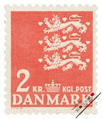 |
| Amazon.com | Amazon.com: Denmark 888 (Complete.Issue.) unmounted Mint/Never hinged ** MNH 1987 Small Imperial Crest (Stamps for Collectors) Flags/Coats of Arms/Maps : Toys & Games | 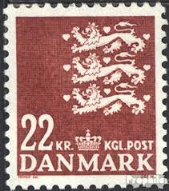 |
| ebid.net | DENMARK, Three Lions Passant, orange 1979, 8.00Kr, #2 on eBid United States | 189253918 | 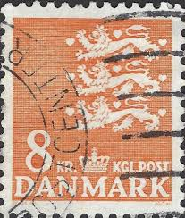 |
| PicClick UK | 3 LIONS 1.50 Kr. Denmark stamp - 1946 coat of arms - purple - see scan £1.31 - PicClick UK | 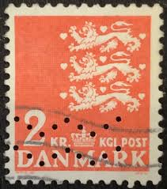 |
| allnumis.com | 2 Krone - Coat of arms, Coat of Arms - Lion - Denmark - Stamp - 51372 | 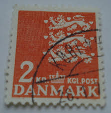 |
| Stampedia | stampedia DENMARK STAMP catalog | 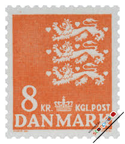 |
| Dreamstime.com | Postage Stamp Printed in Denmark Shows Coat of Arms, Small Coat of Arms Serie, 2.20 Dkr Editorial Image - Image of philatelic, issue: 170285440 | 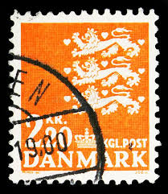 |
| eBay | Dinamarca 780 (edición completa) nuevo 1983 Pequeño escudo de armas imperial | eBay | 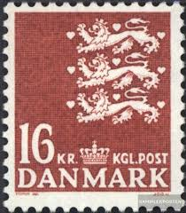 |
| Encyclopaedia Philatelica | Primus Nielsen: índex global de personatges: posició 278 sobre 1343: cànon filatèlic (1 - a/b): 0,7930. ("Encyclopaedia philatelica", Barcelona, 2025) - Encyclopaedia Philatelica | 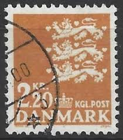 |
| Colnect | Denmark : Stamps [Year: 2005] [1/6] : Colnect 📮 | 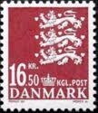 |
| Alamy | Danmark of denmark hi-res stock photography and images - Page 13 - Alamy | 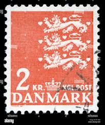 |
| Alamy | DENMARK - CIRCA 1962: stamp printed by Denmark, shows Old Mill, circa 1962 Stock Photo - Alamy | 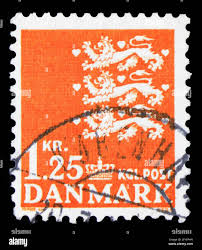 |
| chowdhurygroup.com | Prophila Quality Guaranteed Philately Denmark Rare Stamps For Philatelists And Other Buyers ~ MegaMinistore Postage Stamps | 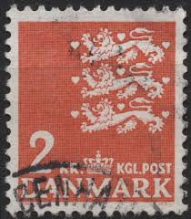 |
| Stampedia | stampedia DENMARK STAMP catalog | 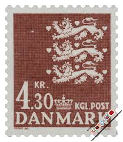 |
| HipStamp | Denmark Lion 2 (AP111617) | Europe - Denmark, Stamp / HipStamp | 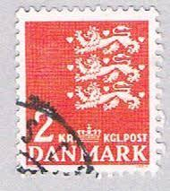 |
| lastdodo.com | Fluorescent paper Stamp catalogue - LastDodo | 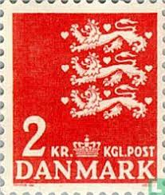 |
| Colnect | Denmark: Coat of Arms, 1946 : US$ 0.01 from arnisventa : Stamps Marketplace : Stamps for sale : Colnect | 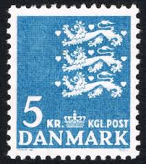 |
| Alamy | Postage stamp printed in denmark hi-res stock photography and images - Page 7 - Alamy | 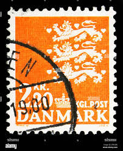 |
| Alamy | Coat of arms of denmark hi-res stock photography and images - Page 6 - Alamy | 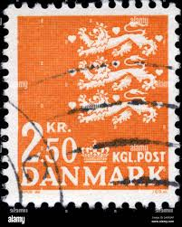 |
| Stampedia | DENMARK 1985 Commemorative Stamps 50 krone, | Small State Seal | 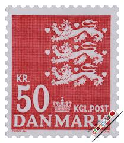 |
| Alamy | Stamp' hi-res stock photography and images - Page 30 - Alamy | 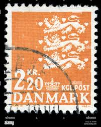 |
| Alamy | Coat of mail hi-res stock photography and images - Alamy | 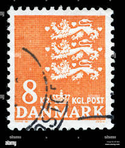 |
| Colnect | Collectibles Marketplace - Buy & Sell: Colnect | 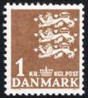 |
| Mercari | Denmark - Caravel - Used | Mercari | 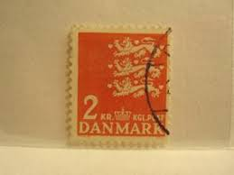 |
| Alamy | Coat of arms of denmark hi-res stock photography and images - Page 7 - Alamy | 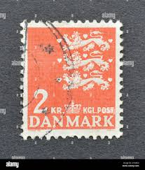 |
| Colnect | Stamp: Coat of Arms (Denmark(Small Coat of Arms) Mi:DK 1389,Sn:DK 1313,Yt:DK 1392,Sg:DK 1320,AFA:DK 1415,Un:DK 1392,WAD:DK003.2005 📮 | 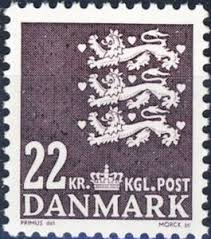 |
| Amazon.ca | Denmark 756 (Complete.Issue.) unmounted Mint/Never hinged ** MNH 1982 Crest (Stamps for Collectors) Flags/Coats of Arms/Maps : Amazon.ca: Everything Else | 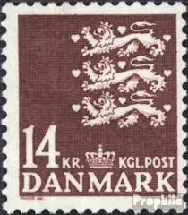 |
| 123RF | DENMARK - CIRCA 1943: Stamp Printed By Denmark, Shows Aircraft, Circa 1943 Stock Photo, Picture and Royalty Free Image. Image 32878208. | 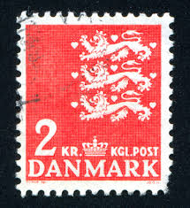 |
| eBay UK | Denmark 1946-2003 SG#346d 1k25 High Orange Arms Definitive Used #E19528 | eBay UK | 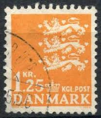 |
| Shutterstock | Lion Stamp: Over 3,703 Royalty-Free Licensable Stock Photos | Shutterstock | 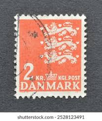 |
| Dreamstime.com | El Sello De Los Rehenes Impreso En Dinamarca Muestra El Escudo De Armas, Serie De Escudos Pequeños, 2 20 Dkr - Corona Danesa, Alr Imagen editorial - Imagen de : 170285440 | 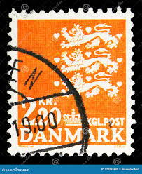 |
| Stampedia | stampedia DENMARK STAMP catalog | 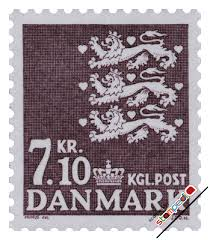 |
| eBay | DENMARK 442 - Danish State Seal "1967 Orange" (pf68157) | eBay | 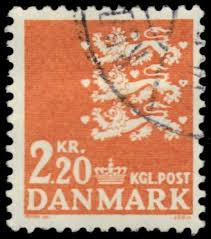 |
| Alamy | DENMARK - CIRCA 1972: stamp printed by Denmark, shows Hvide Sande, Farmhouse, circa 1972 Stock Photo - Alamy | 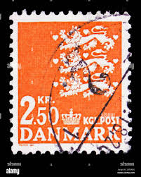 |
| Northwind Stamps | DE03951 Denmark Scott # 395 MNH, State Seal 1962-65 – Northwind Stamps | 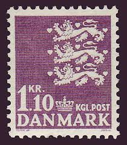 |
| Stampedia | DENMARK 1946 1 krone Definitive Stamps, 1946-1947series | Small State Seal | 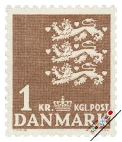 |
| Shutterstock | Lion Stamps: Over 3,703 Royalty-Free Licensable Stock Photos | Shutterstock | 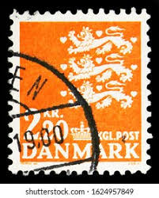 |
| PicClick | DENMARK POSTAGE STAMP Cat. No C1-5 Mint LH $136.00 - PicClick |  |
| eBay | Denmark #Mi0586 MNH 1975 Heraldic Lion Small Arms Definitives [500] | eBay | 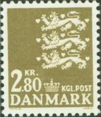 |
| allnumis.com | 30 kroner 2010 - Coat of Arms - Lion, Coat of Arms - Lion - Denmark - Stamp - 13992 | 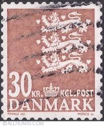 |
| Shutterstock | St Petersburg Russia June 1 2016 Stock Photo 430615225 | Shutterstock | 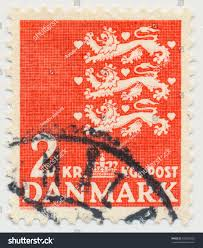 |
| eBay | Denmark #Mi0400x MH 1962 Heraldic Lion Small Arms Definitives [396] | eBay | 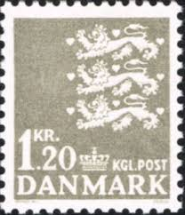 |
| eBay | OOS] Denmark #Mi0513 MH 1971 Heraldic Lion Small Arms Definitives [441A] | eBay | 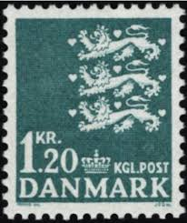 |
| B McLean | 1.25 Kr Orange [Denmark Arms] - £0.20 : B. McLean - Stamps for Collectors, Online Stamp Shop | 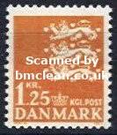 |
| Alamy | Class color dragon crown postal history denmark arms hi-res stock photography and images - Alamy | 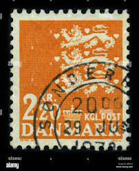 |
| lastdodo.com | State coat of arms 2.80 (1975) - Denmark - LastDodo | 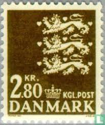 |
| eBay | Postal parcels. Overprinted 1965. | eBay | |
| allnumis.com | 1 Krone 1968 - Coat of Arms (Three Lions), Coat of Arms - Lion - Denmark - Stamp - 7684 |  |
| lastdodo.de | Fluoreszierendes Papier Briefmarken-Katalog - LastDodo | |
| eBay | Dänemark 1977 ** Mi.652 Freimarke Reichswappen Imperial Coat of Arms [sv2882] | eBay |  |
| Blogger.com | OPPENHEUSER, J. | |
| eBay | DENMARK # 396 MNH Dancer State Seal | eBay |  |
| eBay | DENMARK 298 - Danish State Seal "Ordinary Paper" (pb37991) | eBay | |
| Alamy | In the Image, coat from 1962. Models by Guy Laroche. Credit: Album / Archivo ABC / Requena Stock Photo - Alamy | |
| eBay | OOS] Denmark #Mi0625 MNH 1976 Heraldic Lion Small Arms Definitives [503] | eBay | |
| Shutterstock | Denmark Stamp No Circa Date Stamp Stock Photo 2393369011 | Shutterstock |